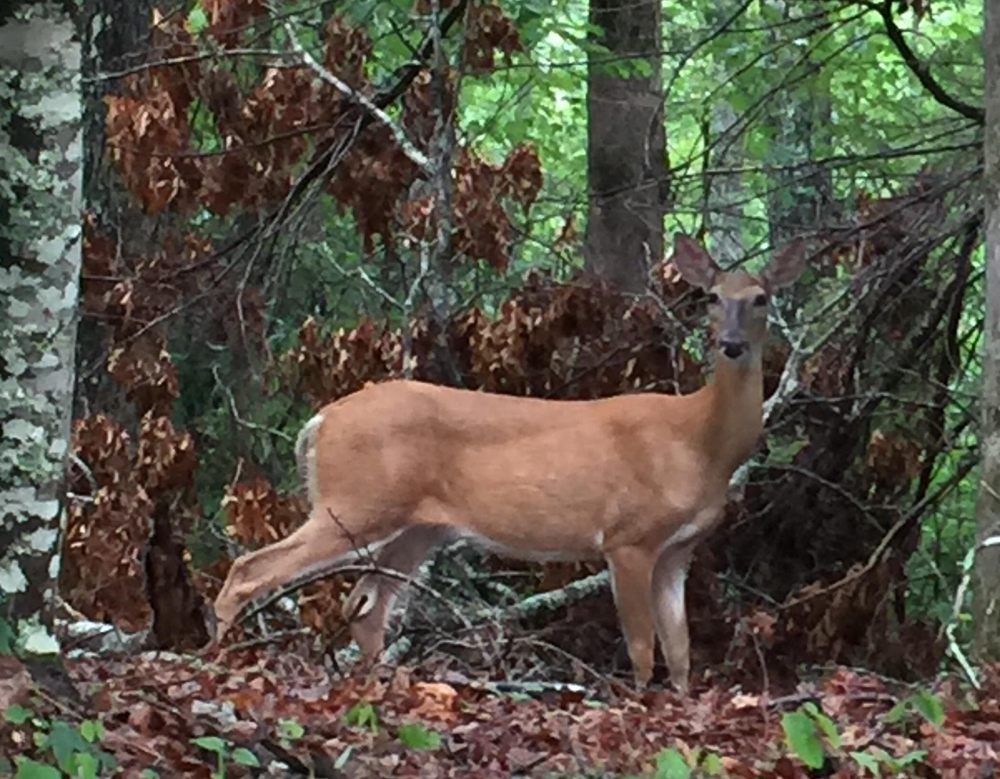
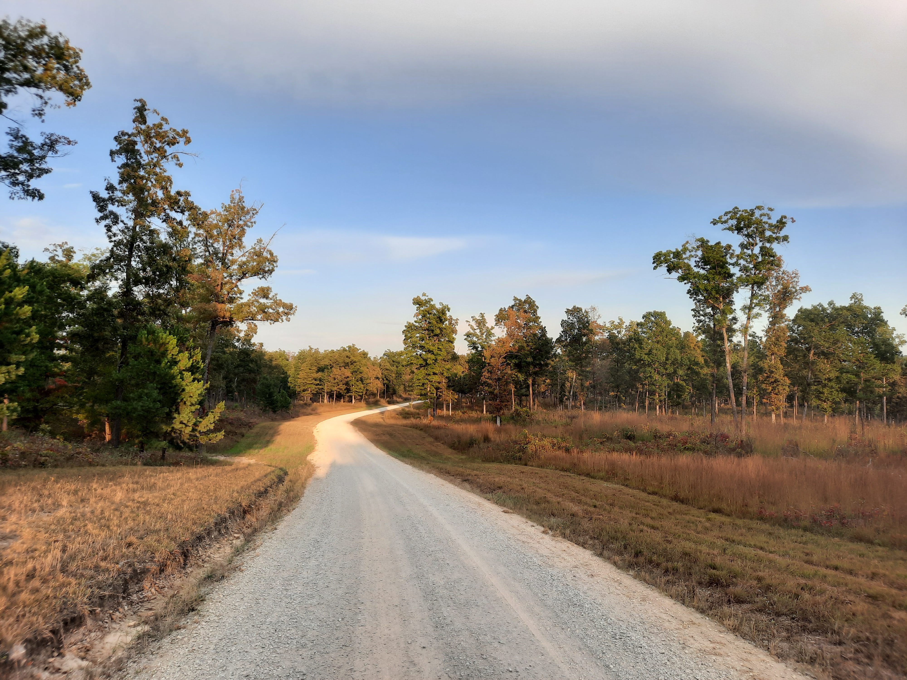
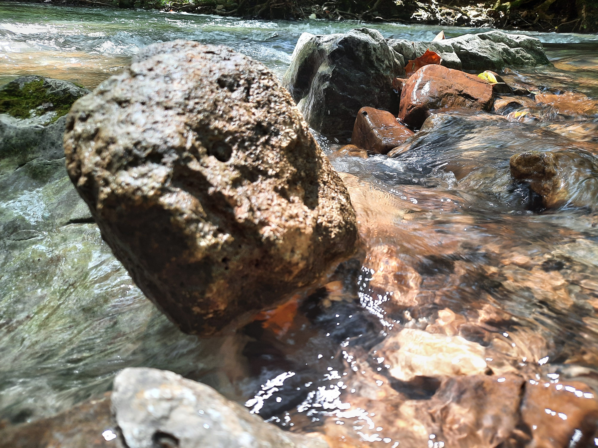
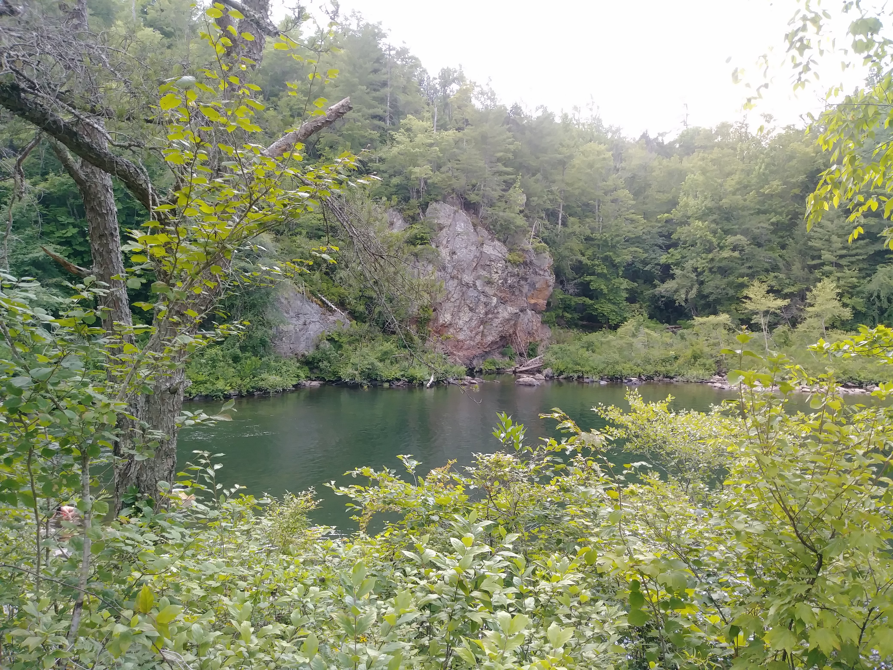
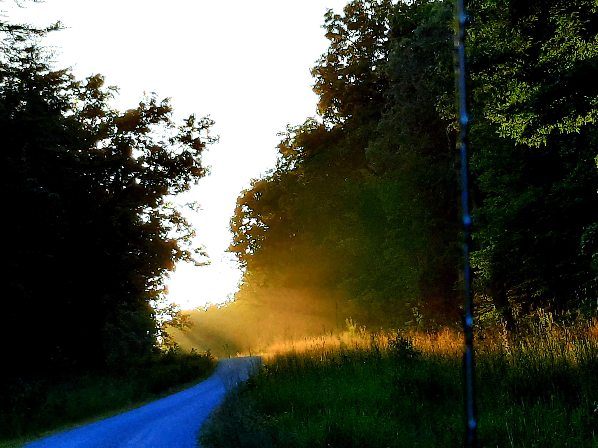
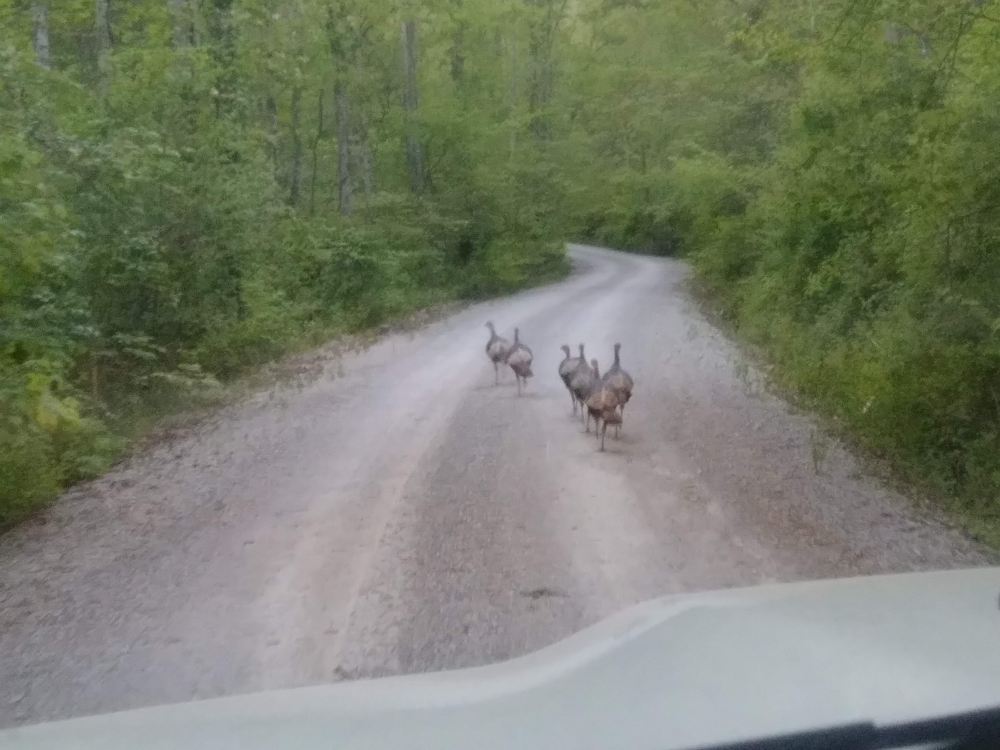

Catoosa Wildlife Management Area - Crossville TN
From The life and Travels of Mia and Family
Catoosa Wildlife Management Area includes over 80,000 acres of wild land located on the Cumberland Plateau and under the Tennessee Wildlife Resources Agency (TWRA). The area has lots of animals, including deer, rabbits, squirrels, boar, rattlesnakes, lots of bird varieties and even bear! Catoosa is funded by hunters and fishermen but is open to the public (except during hunts and other activites). Because the land is funded by hunters, the hunting seasons take priority over the area. Catoosa is free to visit during the day. They do require you are out by dusk and do enforce the policy. If you enjoy hiking, backpacking, whitewater rafting or just driving through nature, than catoosa may quickly become one of your happy places. The terrain ranges from gentle rolling hills to some of the most rugged and extreme terrain in the country according to Wikipedia.
NOTICE: All photos are original property of the website owner.


{kind=link}
Seeing wildlife such as deer, turkey and fowl are common on almost every adventure. Drive slowly and you may even see them on the main roads.

{kind=link}
The main roads of Catoosa are usually easily accessible using a standard vehicle. on side roads, back roads and other trails an ATV or 4x4 vehicle is recommended.

{kind=link}
Catoosa is full of creeks and waterways. You will cross a couple bridges using when traveling on the main roads, and there are more little creeks on back roads and trails.

{kind=link}
A well known swimming area called The Devils Breakfast Table is pictured here. The bridge connecting the Genesis Road entrance is damaged so it is recommended to use Wartburg / Peavine Road entrance.

{kind=link}
If you are lucky enough to enjoy it, a sunrise and sunset provides an amazing view of Catoosa. The animals are usually always stirring early in the morning or right before dusk. Reminder, they want you out of there before dark!

{kind=link}
Turkeys are very common at Catoosa. This day, we travelled behind this crew for about 5 full minutes before they finally got out of the road. Just drive slow and enjoy! We have even seen a bear here once!